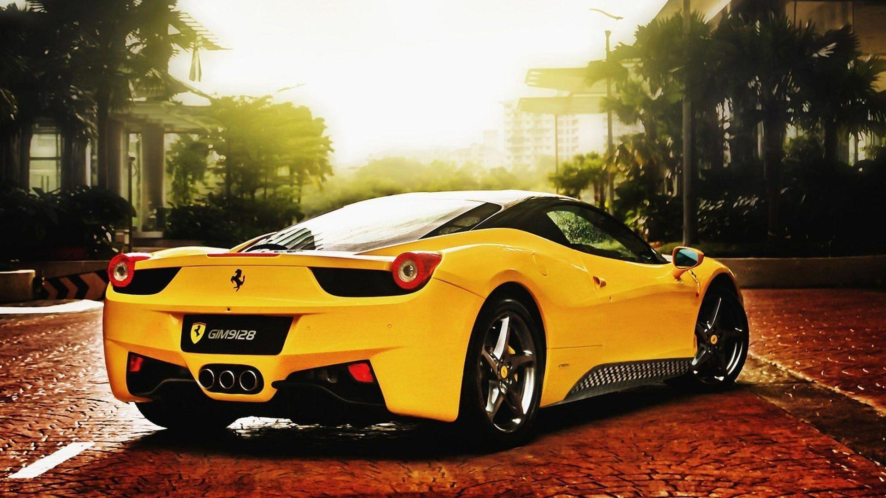
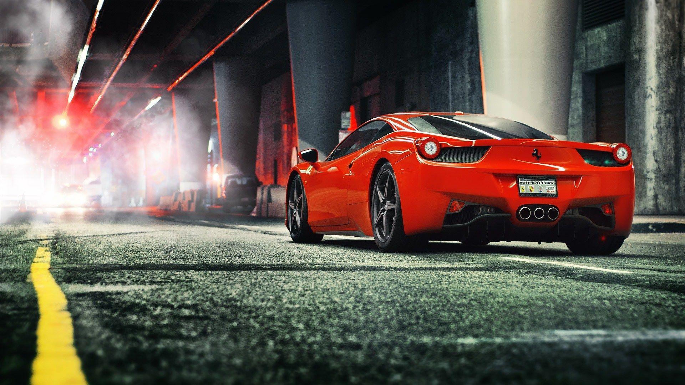

The new special 488 Pista Spider series, the 50th open top model produced by the pracing horse is the company's highest ever performing Ferrari Spider, with a record power-to-weight ratio of 1.92 kg/hp.
The Ferrari 488 Pista is powered by the most powerful V8 engine in the Maranello marque’s history and is the company’s special series sports car with the highest level yet of technological transfer from racing.
718 Nm of torque guarantees impressive acceleration virtually on a par with that of the 812 Superfast while the heady 8900 rpm rev limit means that sporty driving is undiminished
The first and most difficult challenge Ferrari always faces when it decides to develop a new model is to push the boundaries of its own achievements yet again.

The F8 Spider’s greatest achievement is the fact that it unleashes its power instantaneously with zero turbo lag, whilst retaining this V8’s unique and very special soundtrack.
The F8 Tributo features state-of-the-art aerodynamics, integrating innovations and expertise developed thanks to the company’s involvement in the GT and Challenge championships.

The Ferrari Roma, the new mid-front-engined 2+ coupé of the Prancing Horse, features refined proportions and timeless design combined with unparalleled performance and handling.
Powerful yet sophisticated, sporty yet luxurious. Ferrari's new 12-cylinder really does make every journey a radically different experience.
The new GTC4Lusso T is equipped with an evolution of the 3.9-litre V8 turbo which punches out a maximum of 610 cv at 7,500 rpm, guaranteeing powerful acceleration with maximum torque of 760 Nm.
The Ferrari Portofino M, which features the legendary ‘M’ suffix, for Modificata, in its name, is the evolution of the Ferrari Portofino.

The car’s name encapsulates the true significance of all that has been achieved in terms of performance.